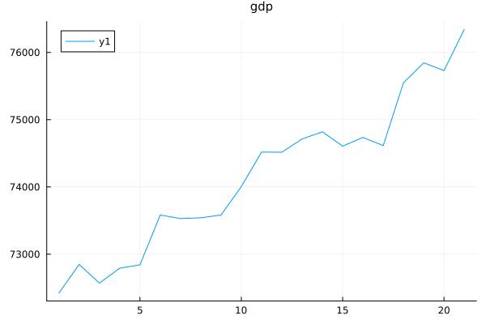
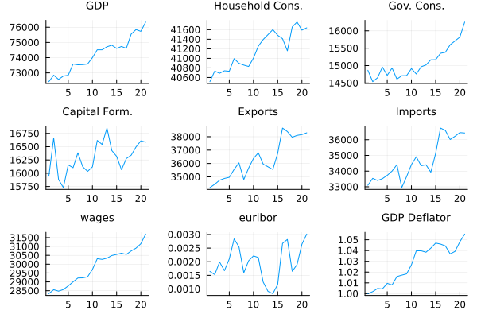
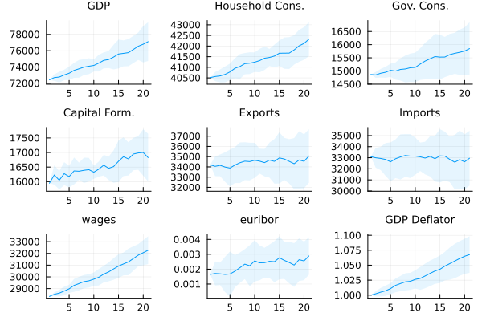

Essential use of BeforeIT
We start by importing the BeforeIT library and other useful libraries.
import BeforeIT as Bit
using Plots, StatsPlotsWe then initialise the model loading some precomputed set of parameters and by specifying a number of epochs. In another tutorial we will illustrate how to compute parameters and initial conditions.
parameters = Bit.AUSTRIA2010Q1.parameters
initial_conditions = Bit.AUSTRIA2010Q1.initial_conditionsDict{String, Any} with 21 entries:
"sb_inact" => 2.23847
"C_G" => [11482.3; 11556.2; … ; 14578.2; 14714.8;;]
"E_CB" => 1.0618e5
"sb_other" => 0.590286
"D_RoW" => 0.0
"L_I" => 236919.0
"omega" => 0.85
"r_bar" => 0.00164593
"N_s" => [123.0; 18.0; … ; 5.0; 60.0;;]
"C_E" => [17384.5; 17752.9; … ; 38786.7; 38617.8;;]
"D_H" => 219841.0
"K_H" => 4.05377e5
"L_G" => 2.32611e5
"pi" => [-0.00749736; -0.00789543; … ; 0.00530319; 0.00100796;;]
"w_UB" => 4.06546
"Y" => [1.04531e5; 1.05062e5; … ; 1.35709e5; 1.34636e5;;]
"Y_I" => [19804.6; 19944.1; … ; 36883.2; 36575.9;;]
"Y_EA" => 2.35485e6
"D_I" => 54049.0
⋮ => ⋮We can now initialise the model
model = Bit.Model(parameters, initial_conditions);Note that the it is very simple to inspect the model by typing
fieldnames(typeof(model))(:w_act, :w_inact, :firms, :banks, :cb, :gov, :rotw, :agg, :prop, :data)and to inspect the specific attributes of one agent type by typing
fieldnames(typeof(model.banks))(:del, :lastid, :id_to_index, :ID, :E_k, :Pi_k, :Pi_e_k, :D_k, :r, :Y_h, :C_d_h, :I_d_h, :C_h, :I_h, :K_h, :D_h, :firms, :w_act, :w_inact)We can run now the model for a number of epochs
T = 20
for _ in 1:T
Bit.step!(model; parallel = true)
Bit.collect_data!(model)
endNote that we can equivalently run the model for a number of steps in the single command Bit.run!(model), but writing the loop explicitely is more instructive. We can then plot any time series stored in the data tracker, for example
plot(model.data.real_gdp, title = "gdp", titlefont = 10)
Or we can plot multiple time series at once using the function plot_data
ps = Bit.plot_data(model, quantities = [:real_gdp, :real_household_consumption, :real_government_consumption, :real_capitalformation, :real_exports, :real_imports, :wages, :euribor, :gdp_deflator])
plot(ps..., layout = (3, 3))
To run multiple Monte-Carlo repetitions in parallel we can use
models = (Bit.Model(parameters, initial_conditions) for _ in 1:10)
models = Bit.ensemblerun!(models, T);Note that this will use the number of threads specified when activating the Julia environment. To discover the number of threads available, you can use the command
Threads.nthreads()2To activate Julia with a specific number of threads, say 8, you can use the command julia -t 8 in the terminal. We can then plot the results of the monte-carlo repetitions using the function plot_data_vector
ps = Bit.plot_data_vector(models)
plot(ps..., layout = (3, 3))